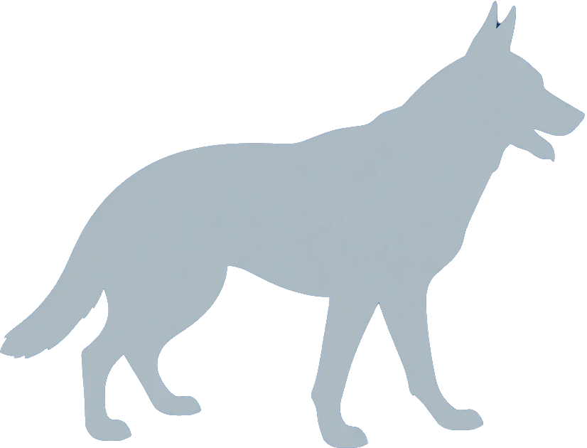

Prácticas de Entrenamiento K9
Basado en protocolos de entrenamiento avanzados, combinando obediencia y respuesta a estímulos de silbato ultrasónico.
Control a larga distancia mediante comandos verbales y silbato. Frecuencia de 35 kHz para "alto" y "regreso".
Técnicas de rastreo sigiloso. El perro responde a cambios sutiles en el rango 40-45 kHz.
Protocolo de intervención estricto. Se usan diferentes frecuencias para comandos específicos.
El K9 patrulla un perímetro y alerta de forma silenciosa. Se usa una frecuencia de 23 kHz como señal de "todo despejado".
Certificación de Operador
Demuestre su aptitud en el manejo de los protocolos ultrasónicos para obtener su certificado.
Ajuste la frecuencia y active el silbato para emitir el comando correcto.
Simulador de Silbato Ultrasónico

35.0 kHz
Rango: 23-54 kHz
Activando la frecuencia ultrasónica real. Este sonido está fuera del rango de audición humana y no será reproducible por la mayoría de los altavoces. Se emitirá un siseo de referencia.